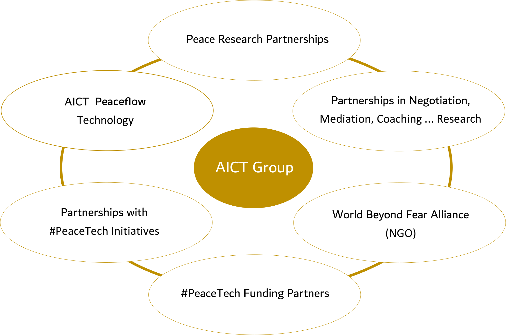

AICT Group
Unsere Vision ist eine Welt, in der wir Konflikte effizient und nachhaltig lösen sowie die Entstehung neuer Konflikte proaktiv verhindern können. Unser Ziel ist ein Paradigmenwechsel im Umgang mit Konflikten.
AICT Peaceflow bietet eine disruptive Antwort auf die großen Herausforderungen unserer Zeit und hilft uns, Konflikte zu verstehen und Lösungsprozesse auf neuartige Weise zu begleiten. Wir setzen dabei auf die Symbiose aus leistungsstarker „Leading Edge“-Technologien, innovativen Analysen und einem ganzheitlichen Ansatz in der Krisen- und Konfliktbegleitung.
Damit eröffnen wir ungeahnte Möglichkeiten und helfen, selbst komplexe Probleme umfassender und effektiver zu lösen als bisher. Peaceflow kommt sowohl bei internen als auch externen Konflikten zum Einsatz – im privaten wie im beruflichen Umfeld, in Unternehmen sowie bei sozialen, politischen und globalen bilateralen Krisen.
Key Features – der disruptive Ansatz von AICT Peaceflow
- All-In-One
Peaceflow vereint verschiedene Methoden der Konfliktintervention – darunter Mediation, Verhandlung, Coaching und Mentoring. Dadurch eröffnen wir völlig neue Perspektiven und Lösungsansätze, selbst für Konflikte, die sich im Laufe der Zeit dynamisch verändern. - Pro-aktive Gesprächsführung
Peaceflow agiert pro-aktiv, ergreift Initiative, setzt Impulse und hebt sich dadurch deutlich von herkömmlichen LLM-Chat-Systemen ab. - Komplexität und Inklusion
Konflikte entstehen oft sehr komplex aus vielen miteinander verknüpften und interagierenden Aktions- und Reaktionssträngen. Sie werden beeinflusst durch kulturelle und sprachliche Unterschiede, persönliche Erwartungen, Erfahrungen und Perspektiven, durch innere Antriebe und oft auch durch wirtschaftliche und machtpolitische Interessen.
Um Konflikte vollständig verstehen und lösen zu können, müssen wir die verschiedenen Auslöser und ihre Zusammenhänge verstehen. Simulationen werden relevanter, je umfassender und vielfältiger die zugrunde liegenden Daten sind, auch wenn der Zusammenhang zwischen diesen nicht immer sofort ersichtlich ist.
Deshalb trainieren wir Peaceflow mit einer breiten Palette sehr diverser globaler Daten, um menschliches Verhalten, emotionale Zustände und Konfliktdynamiken bestmöglich abbilden zu können. Dies umfasst zum Beispiel auch Wissen über indigene Gemeinschaften, gesellschaftliche Randgruppen und pathologische Forschung. - Individuelle Avatare und Verhandlungssettings
Peaceflow passt den Verhandlungsavatar in Charakter und Sprache an die Präferenzen der Teilnehmer an und schlägt spezifische Verhandlungssettings und -umgebungen vor. Wir fördern damit Vertrauen und erhöhen die Erfolgsaussichten einer Konfliktlösung. - Dokumentation und Verträge
Peaceflow dokumentiert auf Wunsch Konfliktlösungsprozesse. Bei verbindlichen Vereinbarungen können diese schriftlich vorbereitet und zur Finalisierung direkt an entsprechende juristische Vertreter gesendet werden. Hierfür existieren bereits #PeaceTech-Lösungen am Markt. Unser Ziel ist eine Partnerschaft in diesem Bereich. - Konfliktprävention
Peaceflow wird durch die Analyse komplexer Echtzeit-Daten und ein tiefgreifendes Verständnis für die Entstehung von Konflikten in der Lage sein, potenzielle Auseinandersetzungen frühzeitig zu erkennen. Darauf aufbauend kann es effektive Gegenstrategien simulieren und konkrete, präventive Maßnahmen vorschlagen. - Persönliches Training
Peaceflow wird dank seines umfassenden Wissens und Konfliktverständnisses zum Sparringpartner und persönlichen Coach für erfolgreiche Kommunikation in Verhandlungs-, Krisen- und Konfliktsituationen. Nutzer können beispielsweise eine bevorstehende Gehaltsverhandlung simulieren, überzeugende Argumente entwickeln und passende Antworten auf mögliche Gegenfragen üben. Dadurch wird Peaceflow zu einem einzigartigen Begleiter für die persönliche und berufliche Entwicklung. - Open Source für Transparenz und Zusammenarbeit
Peaceflow wird als Open-Source-Projekt entwickelt. Dadurch schaffen wir Transparenz, bauen Vertrauen auf und fördern Innovation. Neben der wirtschaftlich erfolgreichen kommerziellen Nutzung unserer nachhaltigen Konfliktlösung leisten wir damit auch einen Beitrag zur Peacetech-Community und ermöglichen eine kontinuierliche gemeinsame Verbesserung der Peaceflow-Technologie. - Hybride Quanten-Cloud-Technologie – Next Level Security & Performance
Wir setzen auf kontinuierliche technologische Weiterentwicklung und evaluieren den Einsatz hybrider Quanten-Cloud-Technologie.
Unser Ziel ist es, die Leistung des Machine Learning-Trainings zu steigern und komplexe Analysen sowie Simulationen von Konfliktdynamiken in Echtzeit durchzuführen. Die Möglichkeit, verschiedene Lösungsszenarien gleichzeitig zu simulieren und die KI in der Interaktion mit den Teilnehmenden (Avatare und Verhandlungssettings) bedarfsgerecht anzupassen, könnte zu präziseren Vorhersagen und maßgeschneiderten Lösungsvorschlägen führen.
Quantenkryptografie könnte zudem ein beispielloses Maß an Sicherheit für die Speicherung und Übertragung sensibler Daten bieten. Unser oberstes Ziel ist es stets, maximale Sicherheit und Integrität für die von Peaceflow verwendeten Daten zu gewährleisten. - Die AICT Group bietet sich als Netzwerkpartner in der Friedens- und Verhaltensforschung an. Ziel ist die Entwicklung neuer Techniken der Konfliktverhandlung, Kommunikation, Psychologie, Mediation, u.v.m.
AICT Group Eco System – Peacemaking in Action

Team Commitment
- Alexander Lexa, CEO
- Felix Degeler, COO
- Patrik Garten, CIO
- Carlos Berná Esteban, CTO
 Catch us on LinkedIn www.linkedin.com
Catch us on LinkedIn www.linkedin.com